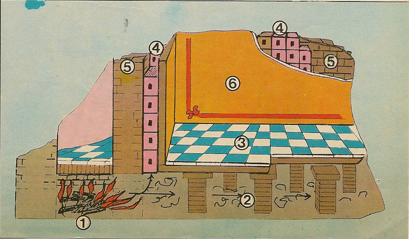

Ce terme vient du grec kaminos, qui signifie « âtre »
Ainsi, la cheminée telle que nous la définissons aujourd'hui est apparue pendant l'antiquité
Au cours de la préhistoire, les feux était allumés sans réelle préoccupation des fumées dégagées. C'est pendant l'empire romain que les premières cheminées ont vu le jour. Les maisons romaines les plus prestigieuses étaient équipées d'un chauffage. Elle était assurée par un foyer situé sous le plancher de la maison ou dans les murs. Ainsi, les fumées toxiques du feu ne sont pas dirigées dans l'intérieur de la pièce habitable : c'est un dispositif qui permet l'évacuation des gaz et est donc une cheminée.

dispositif d'évacuation des gaz, Rome antique
Cependant au cours du Moyen Âge, ces cheminées rudimentaires sont délaissées dans les habitations, et les feux allumés au sol des habitations intoxiquent les personnes et la suie s'accumule dans les pièces. Seulement quelques chateaux prestigieux sont alors dotés de cheminées, à partir du Xeme siècle.
c'est à l'avènement des constructions à deux étages que les hommes de l'époques ont songé à un système d'évacuation des fumées.
Lors de la révolution industrielle, la popularisation des cheminées a accompagné la large utilisation de combustibles tels que la coke ou la houille. Cependant, la polution aérienne, qui s'est également fixée sur les murs des villes, a rapidement encouragé les communes à interdire les cheminées.
Aujourd'hui, l'utilisation de cheminée en tant que source de chauffage principal est interdite en France. Les cheminées à foyer ouvert sont particulièrement visées par les législations, car polluantes.
plus d'information quant à l'interdiction des cheminées en France